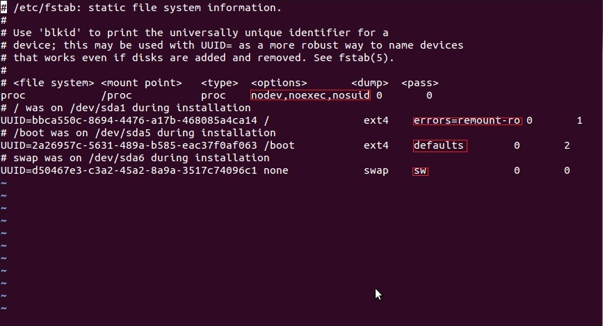
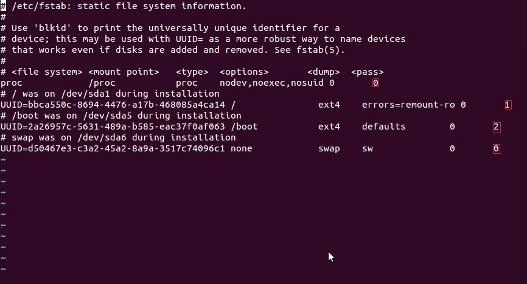

Linux öğrenmenin hangi aşamasında olursanız olursanız olun, bir gün mutlaka “fstab”ı kullanmak zorunda kalacaksınız. Fstab dosyası, Dosya Sistemi’ndeki ayarlamaları yapmaya yarar. Eğer fstab dosyasını iyi kullanabilen biriyseniz süreç oldukça basittir. Fstab ve nasıl işlediği konusunda bilgi almak için yazımızı okumaya devam edin.
Fstab’a Giriş
Her işletim sisteminde bir dosya sistemi tablosu bulunur; bu tablo Linux’ta fstab’dır. Linux’un ilk zamanlarında, “mount” komutunun yardımıyla belirli yerlerdeki herhangi biri sürücü ya da dosya, elle tanıtılırdı. Sürücünüzü makinenize bağladıktan sonra onu masaüstünüzde göremezdiniz. Bunlar, önce elle tanıtılır, ondan sonra işlemler yürütülürdü. Artık bunu otomatik olarak yapabilen sihirli değneğimiz fstab var. Fstab, ne olursa ve nerede olursa olsun, farklı dosya sistemleri ve içeriklerindeki düzenlemeleri yapmada kullanılır.
Not: Bu otomatik tanıtma, PySDM aracının yardımıyla grafiksel olarak da karşımıza çıkar.
Fstab Dosyası Nasıl Görünür?
Fstab dosyası şurada bulunur:
/etc/fstab
Fstab dosyasını aşağıdaki komutu yürüterek de görebilirsiniz:
sudo -H gedit /etc/fstab
Fstab dosyasındaki her bir sütun bir şerit ile ayrılmıştır. Her bir sütunu görünme sıralarına göre açıklayacağız.
Dosya Sistemi
Bu, benim fstab dosyama ait bir ekran görüntüsü:

Bütün fstab girişleri “UUID” ile başlar. Bu UUID’ler, disk biçimlenirken atanmıştır. Aygıtlar/bölümler UUID kullanılarak bağlandığı takdirde aygıt/bölüm isimleri değişse bile sistem tarafından tanınacaktır. Bu kurulum, ev kullanıcıları için en iyisidir; fakat gelecekte RAID’i kullanmayı planlayan ya da ağ tabanlı bir sürücü kullanan ileri seviye bir kullanıcı için aynı şeyi söyleyemeyiz. Bir bölümün UUID’sini öğrenmek için uçbirimde şu komutunu kullanabilirsiniz:
sudo blkid
Bağlanma Noktası
Fstab’taki bir sonraki bölüm, belirli bir bölümün bağlanma noktasını gösterir. Bütün bölümler şeritlerle ayrılmıştır. Fstab’ta bir giriş yaparken, bir bağlanma noktası yeniden yüklemeden önce oluşturulur (değişikliklerin bilgisayar yeniden başladıktan sonra etkin olması gibi.).

Tür
Bir sonraki bölüm, bölmedeki dosya sisteminin türüdür. Linux, birçok dosya sistemini destekler. Bunlardan bazıları, üzerinde değişiklik yapılabilmesi için birkaç pakete gereksinim duyar. Birkaçını inceleyeceğiz:

ext3: Dağıtımların çoğu bugünlerde ext3 dosyalama sistemini tercih ediyor. Daha eski sistemlerde ext2 kullanıyorken artık onun yerini daha üstün olan ext3 almıştır. Ext3, günlüklü dosya sistemidir; güç kesilirse veya sistem doğru şekilde kapatılmazsa hiçbir veri kaybı olmaz. Dolayısıyla disk kontrolleriyle zaman da kaybedilmez. >Not: Bazı dağıtımlarda ext4 dosya sistemi varsayılan olarak gelir.
swap: “swap”, takas alanının dosya türüdür. ntfs ve vfat: Taşınabilir belleklerinizi “vfat” (FAT32 olarak da bilinir.) biçiminde ve Windows sürücünüzü de “ntfs” biçiminde bulacaksınız. auto: Bu sütuna “auto” yazdığınızda, size bir tür göstermeyecek; ama dosya sisteminizi otomatik taramadan geçirecektir.
Seçenekler
Fstab’ın bu bölümü, ayırdığınız bölümler için bağlama seçeneklerini içerir. Bu bölüm, ilk bakışta oldukça karmaşık görünebilir; fakat bunları biraz bilirseniz daha rahat kullanırsınız. Bunlardan yaygın olarak kullanılanlar aşağıda verilmiştir:

auto/noauto
“auto ile ilgili bölme sistem yüklenirken otomatik olarak tanıtılır. Fstab dosyasında “noauto” diye düzenleme yaparak bir bölmenin otomatik olarak tanıtılmasını engelleyebilirsiniz.
exec/noexec Bu, sizin ilgili bölümü seçip iki bölümden oluşanları çalıştırmanızı veya çalıştırmamanızı sağlar. Örneğin; iki bölümden oluşan bir bölmeye “noexec” diyebilir ve onların çalışmamasını isteyebilirsiniz.
ro/rw “ro”, “sadece okunabilir (read only)”; “rw”, “hem yazılıp hem de okunabilir” bölümleri gösterir. Bir bölüm üzerine yazma işlemi yapmak için fstab dosyasında “rw” seçeneğini seçmeniz gerekir.
user/nouser Bir seçenek olarak “nouser” ile sadece “root”, bir bölümü tanıtma ayrıcalığına sahip oluyorken “user”, “root” olmayan kullanıcının da bölümü tanıtmasına izin verir. Birçok kullanıcı, normal kullanıcı olarak bir bölümü tanıtamadıkları için bu özelliği can sıkıcı bulur. Bunun çözümü ise fstab dosyasını güncellemektir.
sync/async Bunlar, dosyaların senkronize ve asenkron yazılmasından sorumludur. Acemi diliyle söylersek, bir dosyayı taşınabilir diske kaydetmek için “Kopyala” komutu verdiğinizde yazma işlemi komutla birlikte başlar. Fakat dahili disklerde durum böyle değildir. Hard disklerdeki yazma işlemleri eşzamanlı değildir. Yazma işlemi komut verildikten uzun bir süre sonra başlar. Bu, “Yazma işlemi yapılırken bekleyin.” hatasının nedenidir. Ayrıca veri kayıplarına da neden olabilir. Eğer “async” olarak ayarlama yaparsanız dosyaların başarılı şekilde yazıldığını görürsünüz, ama aslında onlar fiziksel olarak daha yazılmamış olabilir.
defaults Bütün varsayılan seçenekleri ayarlar: rw, suid, dev, exec, auto, nouser, async.
Dump
Fstab dosyasındaki beşinci sütundur. Giriş olarak sıfır ve birler vardır; hatalar için sıfır ve doğrular için bir kullanılır. Bu yedekleme yöntemlerinin en eskisidir. Eğer seçenek “1” ise yedek çalışır. “0” olması durumunda ise ilgili bölümü kabul etmiyor, demektir.

Fsck
Fsck, dosya sistemini kontrol etmenin kısa şeklidir. Fstab dosyasındaki 6. sütundur. Bu bölümde 0, 1 ve 2 yazdığını görürsünüz. “0”, ilgili bölümün kontrolden geçmeyeceğini gösterir. “1″ başlatma sırasında kontrol edilecek bölümler içindir. Bu sayılar aynı zamanda, disklerin kontrol sırasını da gösterir. Root (/root) bölümü her zaman “1”dir, “root” olunduktan sonra kontrol edilebilecek diğer bölümler “2” olarak ayarlanmıştır.
